新しい個別指導塾の形
最新の学習システムを採用し、映像によるわかりやすい解説と、教室のプロ講師による個別指導を両立しています。
講師ごとのムラをなくし、効率的に学力を定着。受講は何度でも可能で、つまずきはその場で解消。
「わかるまで」丁寧にサポートします。
 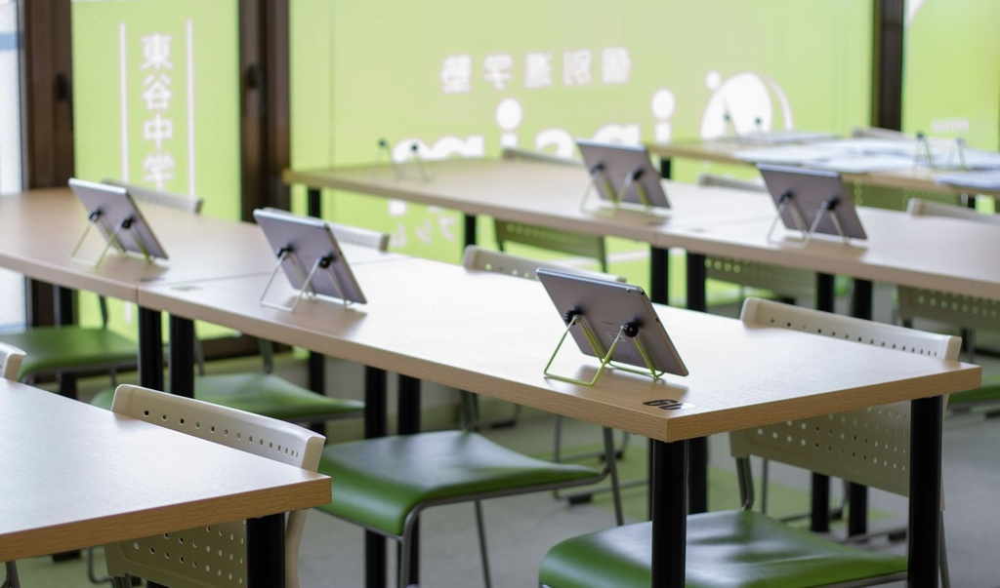
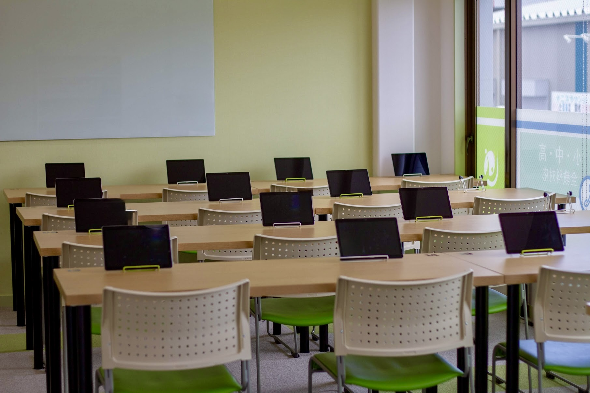
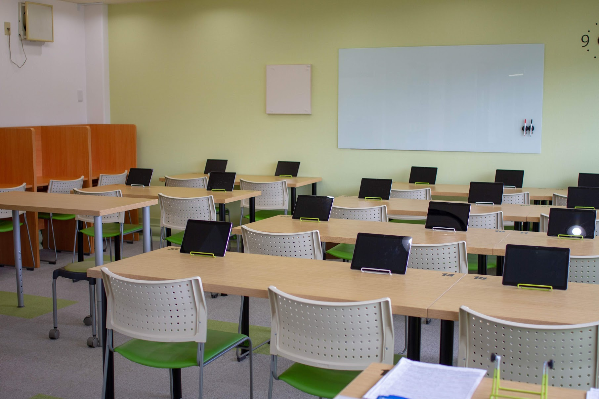
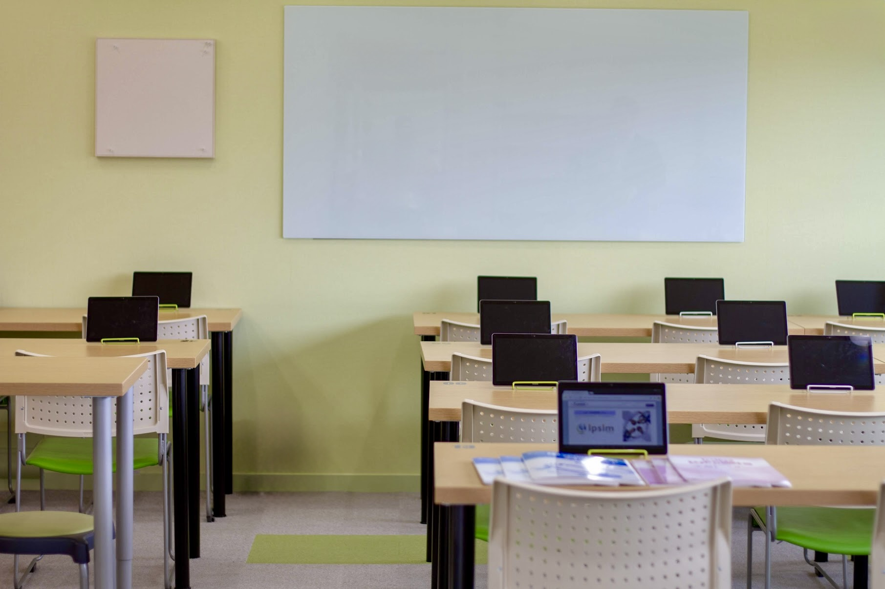
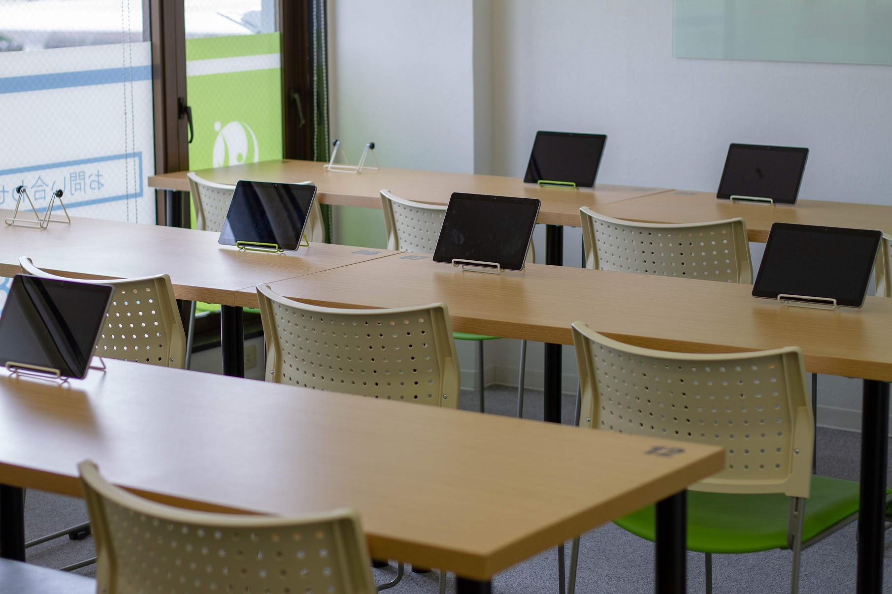
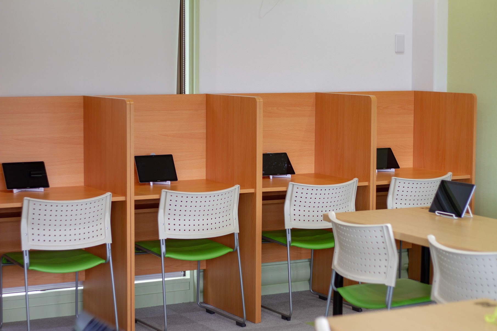
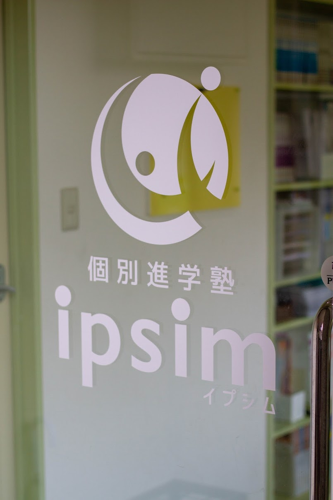
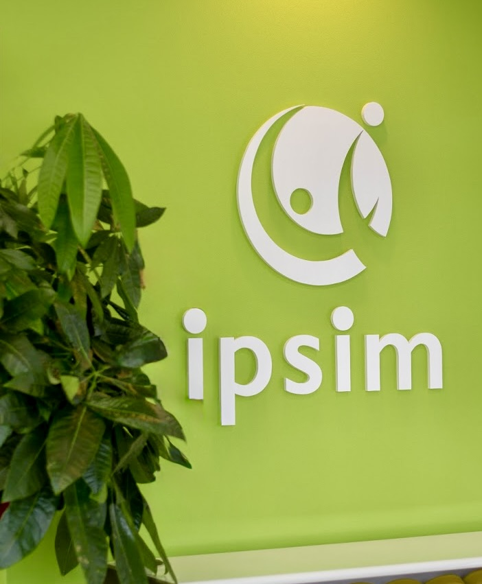
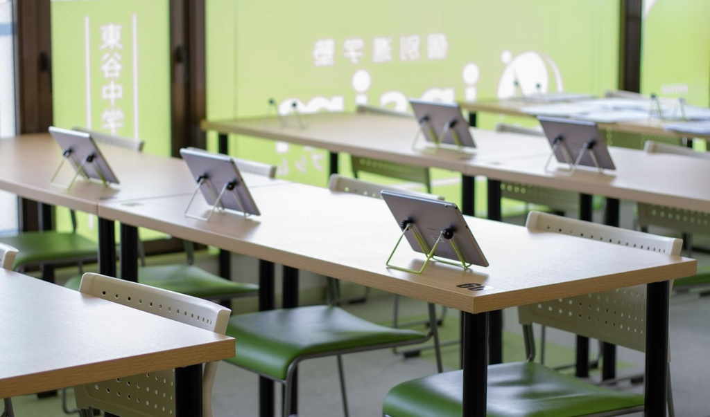
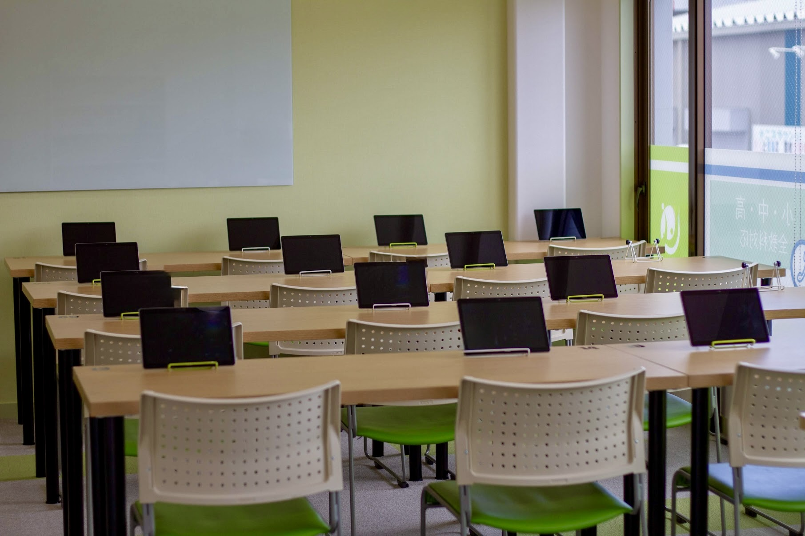
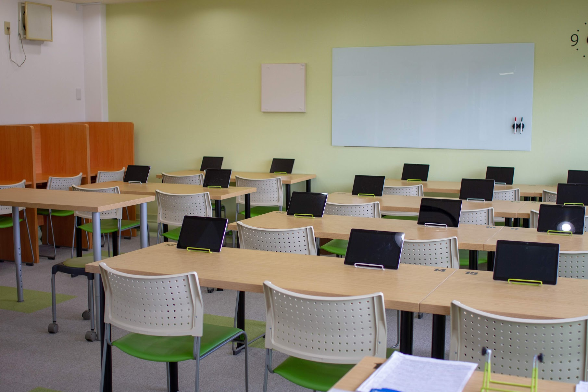
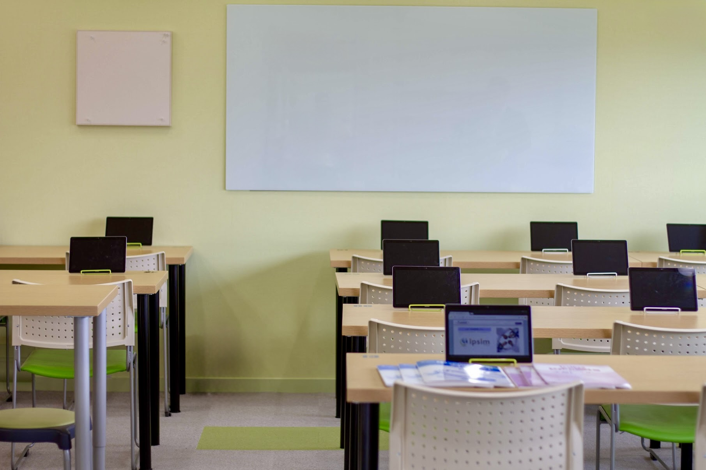
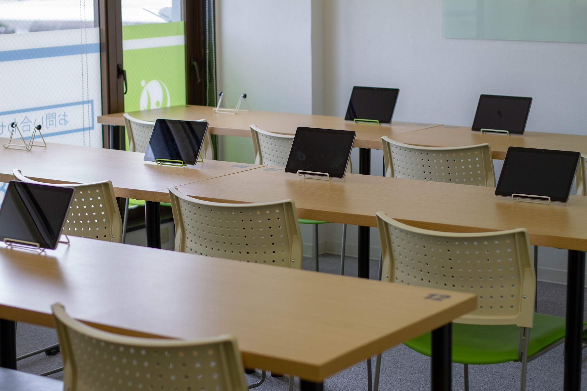
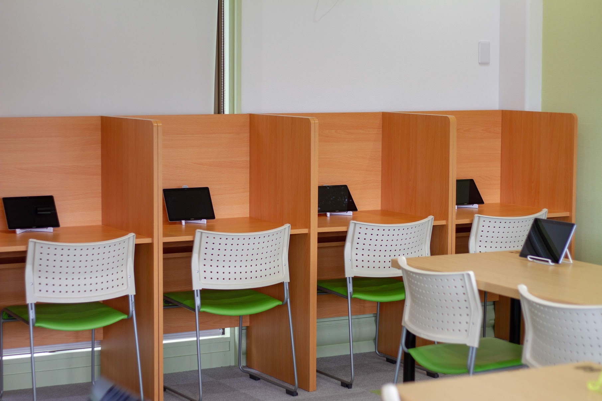
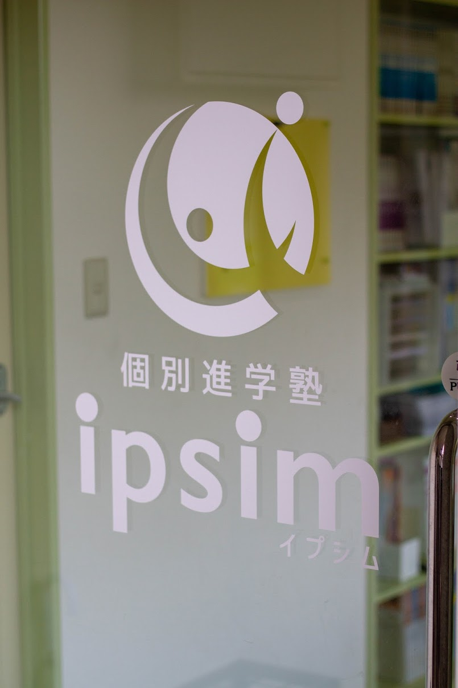
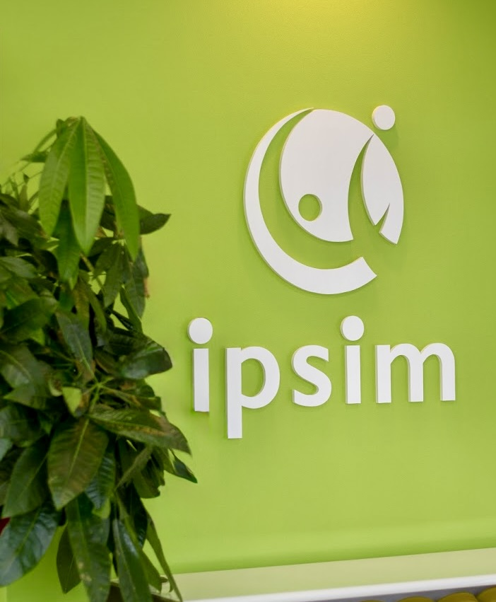
現在の画面幅： -- px
Tailwindブレークポイント：
--
川西市・猪名川町の個別進学塾
無理なく、でも確かに伸びる。 学校の授業が "わかる" 安心と、"できる喜び" を重ねながら、明るく穏やかな空間で成長を支えます。
「できる喜び」
これまで多くの集団塾や個別塾では、どうしても 「教わって満足して終わり」 になりがちでした。
授業中はわかった気がしても、いざテストになると点数につながらない——そんな経験はありませんか？
ipsimは、 「わかったつもり」 で終わらせません。私たちが目指すのは、 「理解した先にある実力」 です。
生徒が自分の 「疑問に向き合い」 、考え、講師の解説を参考にしながら 「理解を深めていく」 。その過程こそが、 「本当の得点力」 を育てます。
ipsimでは、一方的な説明ではなく、演習と解説の 「最適なバランス」 で 「できる喜び」 を積み重ね、着実に成果へとつなげます。
また、質問が得意でないお子さまも安心して学べるよう、講師が一人ひとりの表情やノートの様子を見ながら 「優しく声をかけ」 、理解のタイミングを丁寧に支えます。
「わかる」 が増えると勉強が楽しくなる。 「できる喜び」 が増えると自信が生まれる。ipsimは、そんな小さな積み重ねを大切に、 明るく穏やかな教室で学ぶ力を育てます。
誰もが 「できる喜び」 を感じられる
それが 個別進学塾 ipsim
4つのポイント
各教科ごとにレベルを設定し、平均点に届かないお子さまはまず平均点の突破を、平均点を超えているお子さまは80点・90点台を目標に指導します。
お子さま一人ひとりの目標に合わせた個別カリキュラムで、内申点の向上と確かな実力アップを図り、志望校合格を目指します。
個別指導塾で５教科を学ぶのは、費用面でも時間面でも簡単なことではありません。
ipsimでは、その課題を解決するための料金体系と指導形態を採用しています。
テスト前は、追加料金なしで５教科の学習が可能です。
さらに、季節講習でも低価格で５教科をしっかりと学べます。
効率的に、そしてバランスよく。ipsimで５教科の成績を一緒に伸ばしていきましょう！
『やる気がない』のではなく、『やり方がわからない』だけで行動に移せないお子さまを、これまでたくさん見てきました。
そんなお子さまも、正しい方法を知ると目を輝かせて勉強に取り組みます。
ipsimでは、そうなれるように**「勉強の仕方」**をテスト前オリエンテーションで徹底的に指導します。
暗記のコツ、ノートのまとめ方、学習計画の立て方から進め方まで、丁寧にお伝えしますのでご安心ください。
忙しくても勉強を頑張っている姿、カッコいいと思いませんか？ ipsimは、部活やクラブチーム、習い事にも全力で取り組む生徒を応援しています。 「忙しい」というのは、「充実している」ということ。
だからこそ、効率的に学ぶことで、部活も勉強も両立できます。
これまでにも、部活を最後まで頑張りきり、引退後に驚くほど学力を伸ばした生徒をたくさん見てきました。
どうすれば、どちらも全力で頑張れるのか――
一緒に考えていきましょう。
最新の学習システムを採用し、映像によるわかりやすい解説と、教室のプロ講師による個別指導を両立しています。
講師ごとのムラをなくし、効率的に学力を定着。受講は何度でも可能で、つまずきはその場で解消。
「わかるまで」丁寧にサポートします。
個別指導塾では実現が難しい、低価格での複数科目指導を行っています。
ipsimでは『学びホーダイ』システムを採用しており、お申し込みいただいた科目については通塾回数に制限がありません。
テスト前の追加受講も追加料金なしで可能です。
さらに、定期テスト・実力テスト・高校受験の各対策において、年間の塾費用は一般的な個別指導塾の約半額。
安心して長く通っていただけるように、入会時に年間費用を明確にご説明しています。
定期テストの3週間前から、徹底したテスト対策を実施します。
5教科すべての指導に加え、テスト勉強法オリエンテーション、定期テストの予想問題演習、そして学校の宿題の進捗確認まで行います。
テスト期間中の通塾時間は、通常時の2倍以上。
ここまで徹底したサポートができるのは、中学生指導に特化したipsimだからこそです。
ipsimでは、小学5年生から高校3年生まで、成長に合わせた学習コースをご用意しています。
小学生は中学を見据えて、基礎をしっかりと。 中学生は高校につながる力を育てながら、志望校合格を目指します。
同じ教室で安心して長く通える環境を整え、長期通塾割引もございます。
各学年ごとに定員を設け、指導対象を限定することで、一人ひとりに行き届いた質の高い学習サポートを提供しています。
教室内の席にも余裕をもたせているため、自習の利用や当日の急な欠席振り替えにも柔軟に対応できます。
面談の頻度や内容はご要望を伺いながら柔軟に対応し、学習や進路に関するご相談を定期的に行っています。
また、授業での理解度や小テストの結果などは、毎回メールやLINEでご報告いたします。
清掃の徹底や空気清浄機の設置など、 感染予防をはじめとした快適で安全な学習環境づくりに努めています。
さらに、お子さまの入室・退室時にはメールやLINEでお知らせし、安心して通塾していただけます。
授業の「開始」「終了」をメール / LINE でお知らせします
学習内容と小テスト結果もお知らせします
年2回の懇談会でお子さまのご家庭での様子をお聞きします
現在の学習状況、模擬試験の結果分析、入試の見通しについて詳しくお伝えします
教室予定表を保護者の スマホ / タブレット で確認できます
一部のオンライン教材はご家庭でも利用できます
ここへ書く
ここへ書く
ここへ書く
ここへ書く
ここへ書く
ここへ書く
ここへ書く
お子さまの学習や進路に関してご不安やお悩みはございませんか
私たちは保護者の方とともにお子さまの「できる」を増やすお手伝いをしています
勉強のやり方や家庭での声かけ 志望校選びなど どんな小さなことでもお気軽にご相談ください
成績を伸ばすための具体的なアドバイスや テストで成果を出すコツも丁寧にお伝えします
まずは LINE公式アカウント を友だち追加のうえ お気軽にご相談ください
こちらのLINE公式アカウントから、無料体験のご希望日時をご相談ください。
指導経験豊かなプロ講師が、"つまずくポイント"を"新しい視点"で丁寧に解説します。
体験授業でわかったお子さまの現状の学力や、苦手な部分、今後の課題についてご説明させていただきます。
また親御さんとお子さんのご希望をじっくりお聞きして、"ぴったりのコース"をご提案いたします。
※ 週2回以上の受講で週末テスト対策に参加できます
|
中2女子
|
5教科 | 95点アップ |
|
中2女子
|
5教科 | 95点アップ |
|
中2女子
|
5教科 | 95点アップ |
|
中2女子
|
5教科 | 95点アップ |
|
中2女子
|
5教科 | 95点アップ |
|
中2女子
|
5教科 | 95点アップ |
|
中2女子
|
5教科 | 95点アップ |
|
中2女子
|
5教科 | 95点アップ |
|
中2女子
|
5教科 | 95点アップ |
|
中2女子
|
5教科 | 95点アップ |
ここへ本文を書くここへ本文を書くここへ本文を書くここへ本文を書くここへ本文を書くここへ本文を書く
ここへ本文を書くここへ本文を書くここへ本文を書くここへ本文を書くここへ本文を書くここへ本文を書く
ここへ本文を書くここへ本文を書くここへ本文を書くここへ本文を書くここへ本文を書くここへ本文を書く
ここへ本文を書くここへ本文を書くここへ本文を書くここへ本文を書くここへ本文を書くここへ本文を書く
ここへ本文を書く
ここは強調表示
ここへ本文を書くここへ本文を書く